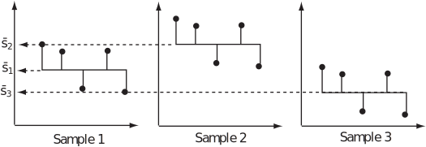
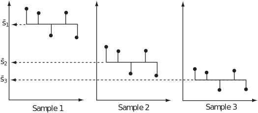
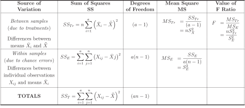
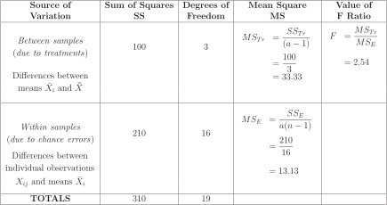

1 One-way ANOVA
In this Workbook we deal with one-way analysis of variance (one-way ANOVA) and two-way analysis of variance (two-way ANOVA). One-way ANOVA enables us to compare several means simultaneously by using the -test and enables us to draw conclusions about the variance present in the set of samples we wish to compare.
Multiple (greater than two) samples may be investigated using the techniques of two-population hypothesis testing. As an example, it is possible to do a comparison looking for variation in the surface hardness present in (say) three samples of steel which have received different surface hardening treatments by using hypothesis tests of the form
We would have to compare all possible pairs of samples before reaching a conclusion. If we are dealing with three samples we would need to perform a total of
hypothesis tests. From a practical point of view this is not an efficient way of dealing with the problem, especially since the number of tests required rises rapidly with the number of samples involved. For example, an investigation involving ten samples would require
separate hypothesis tests.
There is also another crucially important reason why techniques involving such batteries of tests are unacceptable. In the case of 10 samples mentioned above, if the probability of correctly accepting a given null hypothesis is 0.95, then the probability of correctly accepting the null hypothesis
is and we have only a 10% chance of correctly accepting the null hypothesis for all 45 tests. Clearly, such a low success rate is unacceptable. These problems may be avoided by simultaneously testing the significance of the difference between a set of more than two population means by using techniques known as the analysis of variance.
Essentially, we look at the variance between samples and the variance within samples and draw conclusions from the results. Note that the variation between samples is due to assignable (or controlled) causes often referred in general as treatments while the variation within samples is due to chance . In the example above concerning the surface hardness present in three samples of steel which have received different surface hardening treatments, the following diagrams illustrate the differences which may occur when between sample and within sample variation is considered. Case 1
In this case the variation within samples is roughly on a par with that occurring between samples.
Figure 1

Case 2
In this case the variation within samples is considerably less than that occurring between samples.
Figure 2

We argue that the greater the variation present between samples in comparison with the variation present within samples the more likely it is that there are ‘real’ differences between the population means, say and . If such ‘real’ differences are shown to exist at a sufficiently high level of significance, we may conclude that there is sufficient evidence to enable us to reject the null hypothesis .
1.1 Example of variance in data
This example looks at variance in data. Four machines are set up to produce alloy spacers for use in the assembly of microlight aircraft. The spaces are supposed to be identical but the four machines give rise to the following varied lengths in mm.
| Machine | Machine | Machine | Machine |
| 46 | 56 | 55 | 49 |
| 54 | 55 | 51 | 53 |
| 48 | 56 | 50 | 57 |
| 46 | 60 | 51 | 60 |
| 56 | 53 | 53 | 51 |
Since the machines are set up to produce identical alloy spacers it is reasonable to ask if the evidence we have suggests that the machine outputs are the same or different in some way. We are really asking whether the sample means, say and , are different because of differences in the respective population means, say and , or whether the differences in and may be attributed to chance variation. Stated in terms of a hypothesis test, we would write
At least one mean is different from the others
In order to decide between the hypotheses, we calculate the mean of each sample and overall mean (the mean of the means) and use these quantities to calculate the variation present between the samples. We then calculate the variation present within samples. The following tables illustrate the calculations.
At least one mean is different from the others
| Machine | Machine | Machine | Machine |
| 46 | 56 | 55 | 49 |
| 54 | 55 | 51 | 53 |
| 48 | 56 | 50 | 57 |
| 46 | 60 | 51 | 60 |
| 56 | 53 | 53 | 51 |
The mean of the means is clearly
so the variation present between samples may be calculated as
Note that the notation reflects the general use of the word ‘treatment’ to describe assignable causes of variation between samples. This notation is not universal but it is fairly common.
Variation within samples
We now calculate the variation due to chance errors present within the samples and use the results to obtain a pooled estimate of the variance, say , present within the samples. After this calculation we will be able to compare the two variances and draw conclusions. The variance present within the samples may be calculated as follows.
Sample A
Sample B
Sample C
Sample D
An obvious extension of the formula for a pooled variance gives
where and represent the number of members (5 in each case here) in each sample. Note that the quantities comprising the denominator are the number of degrees of freedom present in each of the four samples. Hence our pooled estimate of the variance present within the samples is given by
We are now in a position to ask whether the variation between samples is large in comparison with the variation within samples . The answer to this question enables us to decide whether the difference in the calculated variations is sufficiently large to conclude that there is a difference in the population means. That is, do we have sufficient evidence to reject ?
1.2 Using the -test
At first sight it seems reasonable to use the ratio
but in fact the ratio
,
where is the sample size, is used since it can be shown that if is true this ratio will have a value of approximately unity while if is not true the ratio will have a value greater that unity. This is because the variance of a sample mean is .
The test procedure (three steps) for the data used here is as follows.
- Find the value of ;
- Find the number of degrees of freedom for both the numerator and denominator of the ratio;
- Accept or reject depending on the value of compared with the appropriate tabulated value.
Step 1
The value of is given by
Step 2
The number of degrees of freedom for (the numerator) is
The number of degrees of freedom for (the denominator) is
Step 3
The critical value (5% level of significance) from the -tables (Table 1 at the end of this Workbook) is and since we see that we cannot reject on the basis of the evidence available and conclude that in this case the variation present is due to chance. Note that the test used is one-tailed.
1.3 ANOVA tables
It is usual to summarize the calculations we have seen so far in the form of an ANOVA table. Essentially, the table gives us a method of recording the calculations leading to both the numerator and the denominator of the expression
In addition, and importantly, ANOVA tables provide us with a useful means of checking the accuracy of our calculations. A general ANOVA table is presented below with explanatory notes.
Define number of treatments, number of observations per sample.

In order to demonstrate this table for the example above we need to calculate
a measure of the total variation present in the data. Such calculations are easily done using a computer (Microsoft Excel was used here), the result being
The ANOVA table becomes

It is possible to show theoretically that
that is
As you can see from the table, and do indeed sum to give even though we can calculate them separately. The same is true of the degrees of freedom.
Note that calculating these quantities separately does offer a check on the arithmetic but that using the relationship can speed up the calculations by obviating the need to calculate (say) . As you might expect, it is recommended that you check your calculations! However, you should note that it is usual to calculate and and then find by subtraction. This saves a lot of unnecessary calculation but does not offer a check on the arithmetic. This shorter method will be used throughout much of this Workbook.
1.4 Unequal sample sizes
So far we have assumed that the number of observations in each sample is the same. This is not a necessary condition for the one-way ANOVA.
Key Point 1
Suppose that the number of samples is and the numbers of observations are Then the between-samples sum of squares can be calculated using
where is the total for sample is the overall total and
It has degrees of freedom.
The total sum of squares can be calculated as before, or using
It has degrees of freedom.
The within-samples sum of squares can be found by subtraction:
It has degrees of freedom.
Task!
Three fuel injection systems are tested for efficiency and the following coded data are obtained.
| System 1 | System 2 | System 3 |
| 48 | 60 | 57 |
| 56 | 56 | 55 |
| 46 | 53 | 52 |
| 45 | 60 | 50 |
| 50 | 51 | 51 |
Do the data support the hypothesis that the systems offer equivalent levels of efficiency?
Appropriate hypotheses are
At least one mean is different to the others
Variation between samples
| System 1 | System 2 | System 3 |
| 48 | 60 | 57 |
| 56 | 56 | 55 |
| 46 | 53 | 52 |
| 45 | 60 | 50 |
| 50 | 51 | 51 |
The mean of the means is and the variation present between samples is
Variation within samples
System 1
System 2
System 3
Hence
The value of is given by
The number of degrees of freedom for is No. of samples
The number of degrees of freedom for is No. of samples
The critical value (5% level of significance) from the -tables (Table 1 at the end of this Workbook) is and since we conclude that we have sufficient evidence to reject so that the injection systems are not of equivalent efficiency.
Exercises
-
The yield of a chemical process, expressed in percentage of the theoretical maximum,
is measured with each of two catalysts, A, B, and with no catalyst (Control: C). Five
observations are made under each condition. Making the usual assumptions for an
analysis of variance, test the hypothesis that there is no difference in mean yield between
the three conditions. Use the 5% level of significance.
Catalyst A Catalyst B Control C 79.2 81.5 74.8 80.1 80.7 76.5 77.4 80.5 74.7 77.6 81.7 74.8 77.8 80.6 74.9 -
Four large trucks, A, B, C, D, are used to move stone in a quarry. On a number of days, the
amount of fuel, in litres, used per tonne of stone moved is calculated for each truck. On some
days a particular truck might not be used. The data are as follows. Making the usual
assumptions for an analysis of variance, test the hypothesis that the mean amount of fuel
used per tonne of stone moved is the same for each truck. Use the 5% level of
significance.
Truck Obs. A 0.21 0.21 0.21 0.21 0.20 0.19 0.18 0.21 0.22 0.21 B 0.22 0.22 0.25 0.21 0.21 0.22 0.20 0.23 C 0.21 0.18 0.18 0.19 0.20 0.18 0.19 0.19 0.20 0.20 0.20 D 0.20 0.20 0.21 0.21 0.21 0.19 0.20 0.20 0.21
-
We calculate the treatment totals for A: 392.1, B:
405.0 and C: 375.7. The overall total is 1172.8 and
The total sum of squares is
on degrees of freedom.
The between treatments sum of squares is
on degrees of freedom.
By subtraction, the residual sum of squares is
on degrees of freedom.
The analysis of variance table is as follows:
Source of Sum of Degrees of Mean Variance variation squares freedom square ratio Treatment 86.257 2 43.129 56.873 Residual 9.100 12 0.758 Total 95.357 14 The upper point of the distribution is 3.89. The observed variance ratio is greater than this so we conclude that the result is significant at the 5% level and we reject the null hypothesis at this level. The evidence suggests that there are differences in the mean yields between the three treatments.
-
We can summarise the data as follows.
Truck A 2.05 0.4215 10 B 1.76 0.3888 8 C 2.12 0.4096 11 D 1.83 0.3725 9 Total 7.76 1.5924 38 The total sum of squares is
on degrees of freedom.
The between trucks sum of squares is
on degrees of freedom.
By subtraction, the residual sum of squares is
on degrees of freedom.
The analysis of variance table is as follows:
Source of Sum of Degrees of Mean Variance variation squares freedom square ratio Trucks 3 9.1824 Residual 34 Total 37 The upper point of the distribution is approximately 2.9. The observed variance ratio is greater than this so we conclude that the result is significant at the 5% level and we reject the null hypothesis at this level. The evidence suggests that there are differences in the mean fuel consumption per tonne moved between the four trucks.